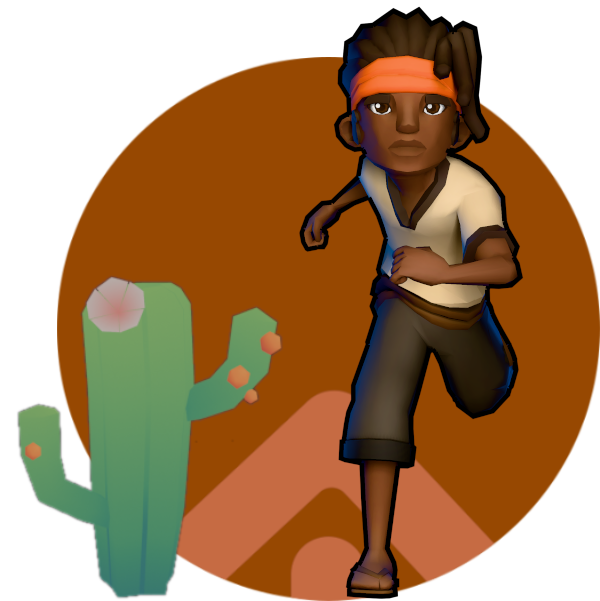

Protagonista 3D
JOGO MOBILE · 3D · EM DESENVOLVIMENTO
Trilhas da Terra
Projeto protagonista e prioridade de publicação da Aimotech em 2026. Demonstra o desenvolvimento de jogos 3D e a aplicação direta da abordagem territorial na construção de narrativa, mecânicas de exploração e experiência interativa.
Pesquisa Territorial Aplicada
·
Game Design & Arte 3D
·
Propriedade Intelectual Aimotech
Conhecer o Jogo Trilhas da Terra